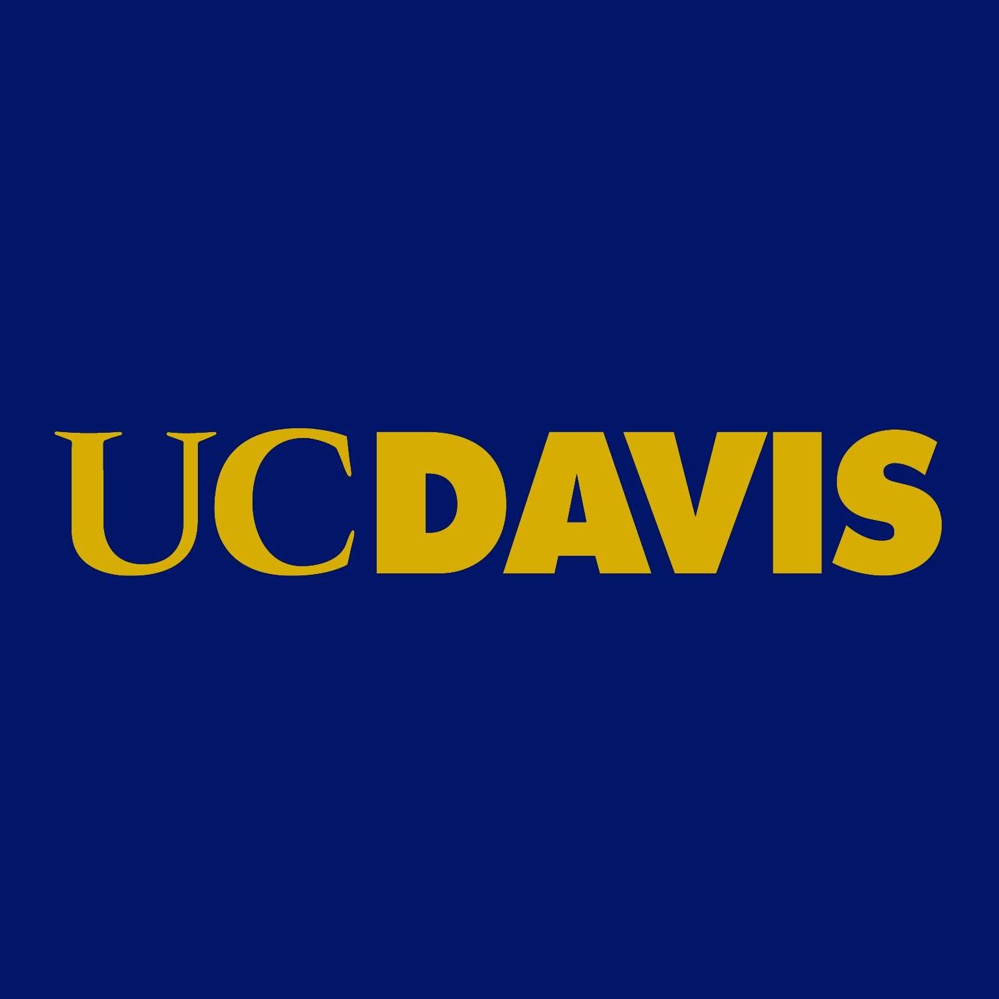
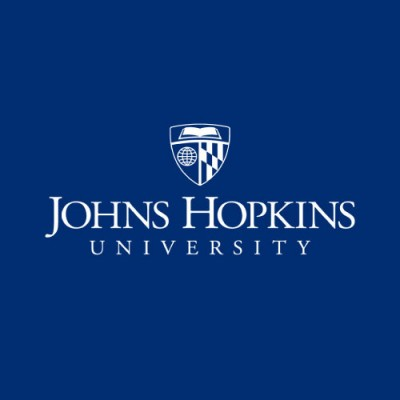

UC San Diego is a student-centered, research-focused, service-oriented public institution that provides opportunity for all. Recognized as one of the top fifteen research universities worldwide, a culture of collaboration sparks discoveries that advance society and drive economic impact.
University of California San Diego

Going to professional school at UC Davis will prepare you to be at the top of your field. You’ll benefit from our faculty — respected by academia and industry alike. They are the ones developing breakthroughs and advancing new knowledge. This knowledge lets you be at the forefront of your profession. Join with us Start your Career today
University of California, Davis
